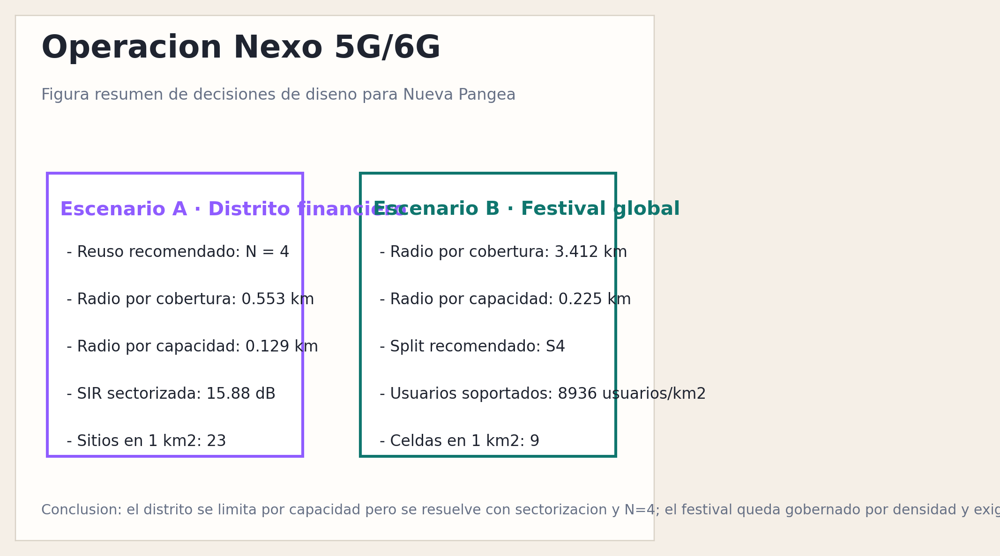
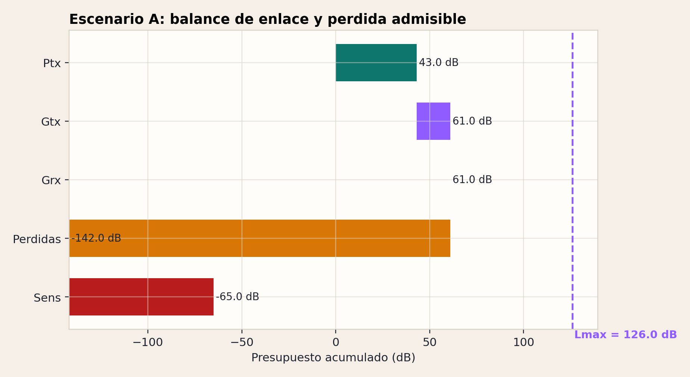
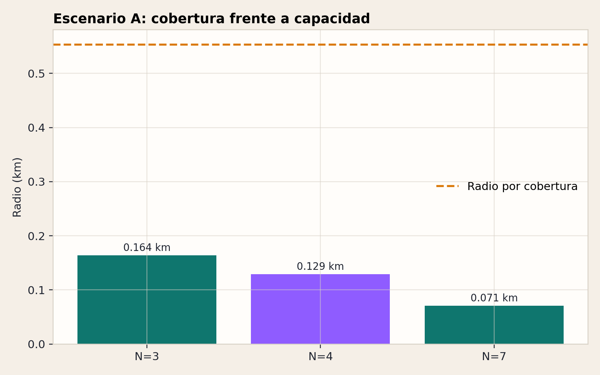
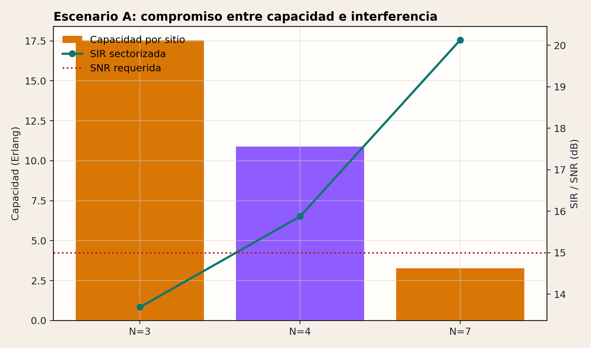
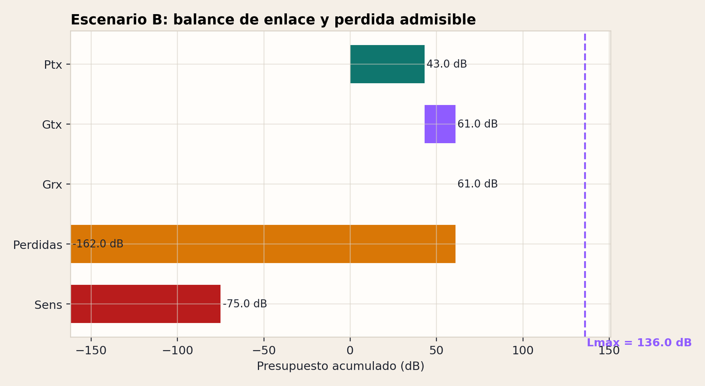
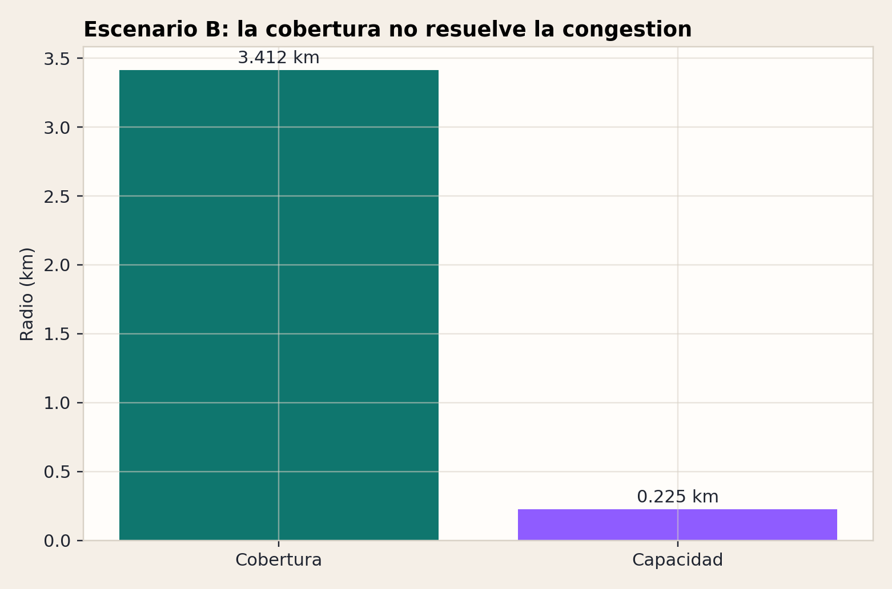
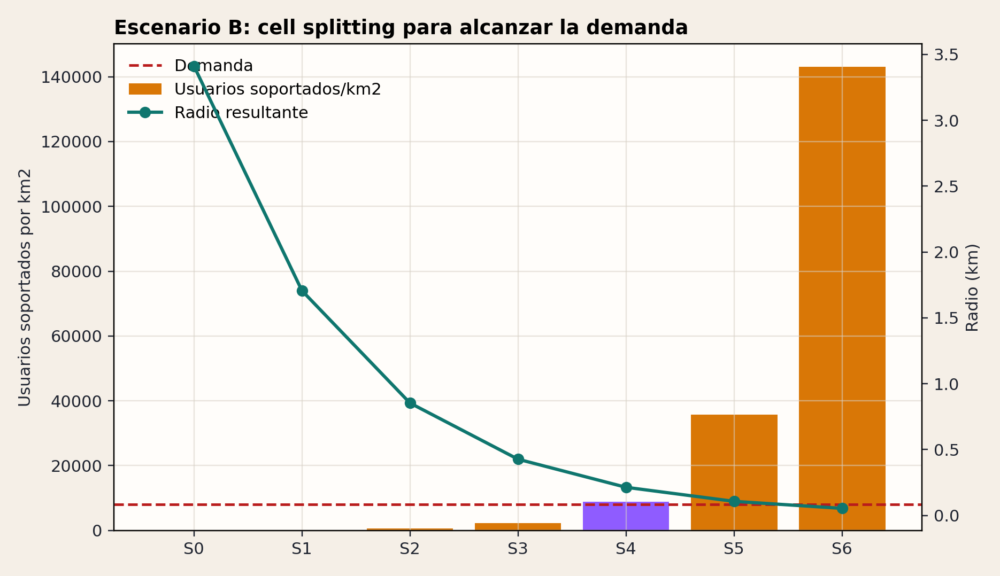

Distrito financiero urbano
Esta pagina adapta la estructura del proyecto de referencia a la casuistica de Operacion Nexo. La web resume el dimensionamiento por cobertura y por capacidad, el estudio de reutilizacion frecuencial y la evaluacion de cell splitting para una red orientada a contexto LTE/5G.
Todo el contenido se puede abrir directamente desde el archivo index.html, sin backend,
y queda acompasado con un paquete Python reproducible en src/nexo/.
Lo que debe sostener la memoria tecnica final.
Resumen de la cadena de calculo usada en el proyecto.
Distrito financiero urbano
Primera opcion que supera el umbral radio
Festival en explanada abierta
Necesario para absorber la densidad
Decision consolidada de diseno para ambos escenarios del reto.

Vision comparativa de entorno, modelo de propagacion y requisito de diseno.
| Escenario | Entorno | Modelo | Densidad | Diseno requerido |
|---|---|---|---|---|
| Escenario A | Distrito financiero urbano denso | L p = 135 + 35 log10(d) | 2500 usuarios activos/km2 | 3 sectores por sitio y comparacion N = 3, 4, 7 |
| Escenario B | Festival temporal en explanada abierta | L p = 120 + 30 log10(d) | 8000 usuarios activos/km2 | Celdas omni y evaluacion de cell splitting |
Datos comunes usados en todos los calculos de cobertura y capacidad.
| Parametro | Valor | Lectura ingenieril |
|---|---|---|
| Frecuencia de operacion | 1800 MHz | Comun a ambos escenarios |
| Ancho de banda | 20 MHz | Se usa en el ruido termico |
| Potencia TX BS | 43 dBm | Equivale a 20 W |
| Ganancia antena TX | 18 dBi | Antena de estacion base |
| Ganancia antena RX | 0 dBi | Terminal movil |
| Perdidas adicionales | 12 dB | Cables, conectores y margen |
| Figura de ruido | 7 dB | NF del receptor |
| Perdidas de implementacion | 2 dB | Termino L impl |
| Grado de servicio | 2.00% | Objetivo de bloqueo para Erlang B |
| Canales fisicos totales | 100 | Pool simplificado tipo PRB |
Hipotesis que fijan la trazabilidad y la reproducibilidad del trabajo.
| Supuesto | Valor aplicado | Justificacion |
|---|---|---|
| Area de referencia | 1 km2 en ambos escenarios | El enunciado pide cuantas celdas harian falta para un area objetivo, pero no fija una superficie concreta. Se normaliza a 1 km2 para comparar densidad celular. |
| Reparto de canales en A | floor(100 / N) por sitio y reparto uniforme entre 3 sectores | Es la interpretacion mas simple y reproducible cuando el enunciado no define scheduler ni redistribucion dinamica. |
| Interferencia co-canal | 2 interferentes dominantes en sectorizado | Aproximacion docente de primera corona para comparar N = 3, 4 y 7 sin introducir un simulador completo. |
| Geometria celular | Hexagono regular equivalente | Permite pasar de capacidad por area a radio celular y numero de sitios con una regla geometrica estandar. |
| Marco tecnologico | Lectura LTE/5G sobre formulas simplificadas | La memoria se redacta como red moderna aunque el dimensionamiento numerico se apoye en balance de enlace y Erlang B. |
El codigo esta preparado para ejecutarse en local y rehacer tablas, figuras y documentos.
set PYTHONPATH=src python -m nexo.main
Entorno urbano denso con tres sectores por sitio y comparacion N = 3, 4 y 7.
Balance de enlace, radios de diseno y compromiso entre capacidad e interferencia.
Visualiza potencia, ganancias y perdida maxima admisible del escenario urbano.

Comparativa del radio teorico y del radio util bajo presion de trafico.

Muestra el equilibrio entre capacidad Erlang y SIR sectorizada para N = 3, 4 y 7.

Ruido, sensibilidad y radio teorico de cobertura para el entorno urbano denso.
| Escenario | Ruido termico (dBm) | Sensibilidad (dBm) | Lmax (dB) | Radio cobertura (km) | Trafico usuario (Erl) | Densidad trafico (Erl/km2) |
|---|---|---|---|---|---|---|
| A distrito financiero | -93.99 | -76.99 | 125.99 | 0.553 | 0.1 | 250 |
Comparativa completa de N = 3, 4 y 7 con su impacto sobre Erlang y SIR.
| N | Canales/sitio | Canales/sector | Capacidad sitio (Erl) | Radio capacidad (km) | Radio diseno (km) | SIR sectorizada (dB) | Margen SIR (dB) | Sitios por 1 km2 | Recomendado |
|---|---|---|---|---|---|---|---|---|---|
| 3 | 33 | 11 | 17.525 | 0.164 | 0.164 | 13.689 | -1.311 | 15 | No |
| 4 | 25 | 8 | 10.881 | 0.129 | 0.129 | 15.875 | 0.875 | 23 | Si |
| 7 | 14 | 4 | 3.277 | 0.071 | 0.071 | 20.129 | 5.129 | 77 | No |
Explanada abierta con densidad extrema de usuarios y evaluacion explicita de cell splitting.
Comparativa entre cobertura teorica, capacidad real y etapas sucesivas de splitting.
El enlace es generoso en cobertura, pero eso no garantiza capacidad suficiente.

La grafica deja clara la distancia entre la geometria radio y la demanda real.

Se identifica la primera etapa que iguala o supera la densidad de usuarios exigida.

Valores de enlace y radio teorico para la explanada abierta del escenario B.
| Escenario | Ruido termico (dBm) | Sensibilidad (dBm) | Lmax (dB) | Radio cobertura (km) | Trafico usuario (Erl) | Densidad trafico (Erl/km2) |
|---|---|---|---|---|---|---|
| B festival global | -93.99 | -86.99 | 135.99 | 3.412 | 0.083 | 666.667 |
Sin splitting, la capacidad agregada sigue siendo insuficiente para la densidad exigida.
| Canales/celda | Capacidad celda (Erl) | Radio capacidad (km) | Radio cobertura (km) | Radio diseno (km) | Celdas por 1 km2 | Factor limitante |
|---|---|---|---|---|---|---|
| 100 | 87.972 | 0.225 | 3.412 | 0.225 | 8 | capacity |
Evolucion de radio, celdas equivalentes y usuarios soportados desde S0 hasta S6.
| Etapa | Radio (km) | Area (km2) | Celdas equivalentes | Usuarios soportados/km2 | Demanda usuarios/km2 | Cumple demanda | Celdas por 1 km2 | Recomendado |
|---|---|---|---|---|---|---|---|---|
| 0 | 3.412 | 30.243 | 1 | 34.905 | 8000 | No | 1 | No |
| 1 | 1.706 | 7.561 | 4 | 139.622 | 8000 | No | 1 | No |
| 2 | 0.853 | 1.89 | 16 | 558.488 | 8000 | No | 1 | No |
| 3 | 0.426 | 0.473 | 64 | 2233.951 | 8000 | No | 3 | No |
| 4 | 0.213 | 0.118 | 256 | 8935.805 | 8000 | Si | 9 | Si |
| 5 | 0.107 | 0.03 | 1024 | 35743.222 | 8000 | Si | 34 | No |
| 6 | 0.053 | 0.007 | 4096 | 142972.887 | 8000 | Si | 136 | No |
La entrega queda lista para abrir, revisar en GitHub y seguir editando en Visual Studio Code.
Documento principal con desarrollo de metodologia, resultados y conclusiones.
Abrir archivo MD Informe tecnico editableVersion ligera para revisar en GitHub o adaptar la memoria final.
Abrir archivo HTML Anexo de calculosSecuencia numerica reproducible para defender cada formula.
Abrir archivo HTML Guion de defensaResumen corto para exposicion oral del reto.
Abrir archivo CSV CSV escenario ATabla de reuso, capacidad, SIR y radio de diseno del distrito financiero.
Abrir archivo CSV CSV cell splittingTabla completa de etapas S0-S6 con capacidad por km2.
Abrir archivo PY Codigo principalPunto de entrada para recalcular salidas y reconstruir la web.
Abrir archivo MD README del paqueteInstrucciones para abrir la pagina y regenerar todos los resultados.
Abrir archivo